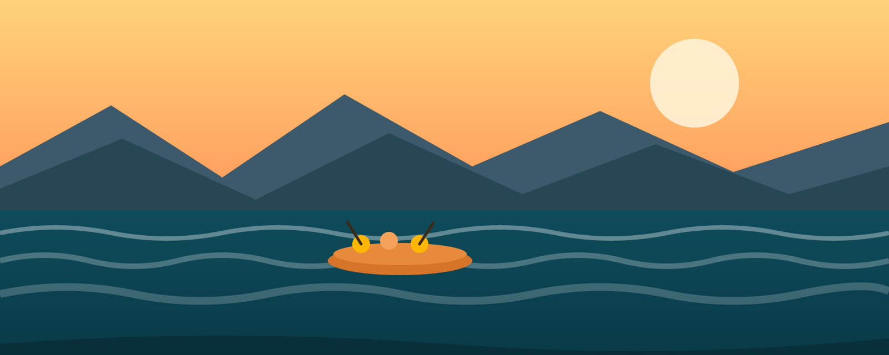

At Blue Rapids Rafting Co., our mission is simple: turn first-time paddlers into lifelong river lovers. We believe an afternoon on whitewater can reset a mind, build a team, and remind you what your arms are actually for.

Blue Rapids Rafting Co.
History
Founded in 2004 by a small crew of river guides who couldn't stay away from the rapids, Blue Rapids Rafting Co. started with a single raft and a beat-up van. Two decades later, we've guided over 40,000 guests down some of the region's most thrilling stretches of whitewater, without losing the family feel that got us started.